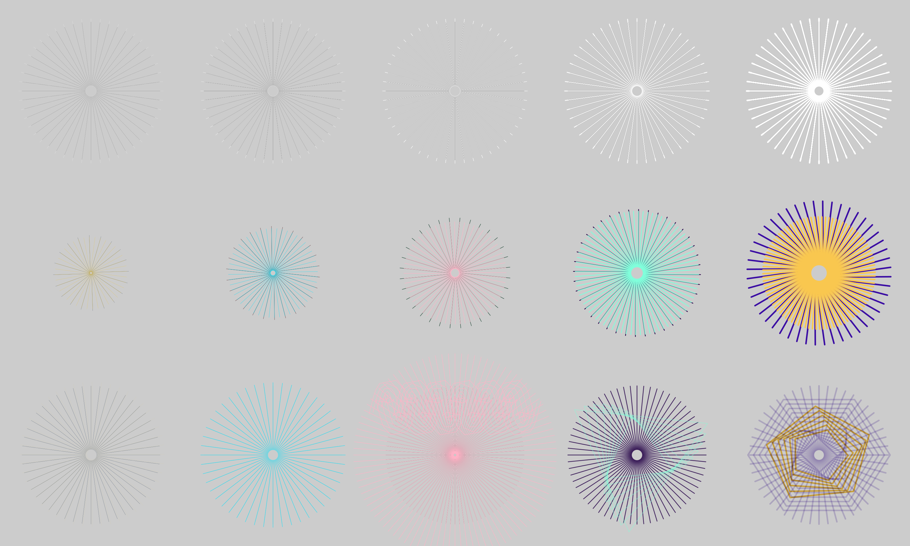

Guilloche Dutch Lighthouse Radiate 20260821 v3
Stage-4 Dutch guilloche review, revision 3 (issue #61): the sol-5.6 reference-guided two-layer lighthouse radiate as one 2x 3x5 plate - row 1 black/white reference, row 2 independent per-layer rays/radii, row 3 wave overlay, triangle form, hexagon multi-polygon, and per-color opacity 0.2-1.0 - across stroke widths 0.5, 1, 2, 4, and 8. Per-cell plates are not generated. Prior round: generation-guilloche-20260821-dutch-v2-index (STALE).
Izzi generation commit: d587019f08a09a2c5d2b7f05f5a39a0ee30dbf0d · 1 pass
-

3x5 review plate grid v3
The full 4800x2880 Dutch lighthouse radiate review plate at 2x scale, third revision: row 1 black/white reference, row 2 independent per-layer ray counts and radii, row 3 registration glitch, asymmetric widths, wave overlay, triangle form, and hexagon multi-polygon multi-pattern with per-color opacity 0.2-1.0. Stroke widths 0.5, 1, 2, 4, and 8. Single grid only; per-cell plates are not generated.